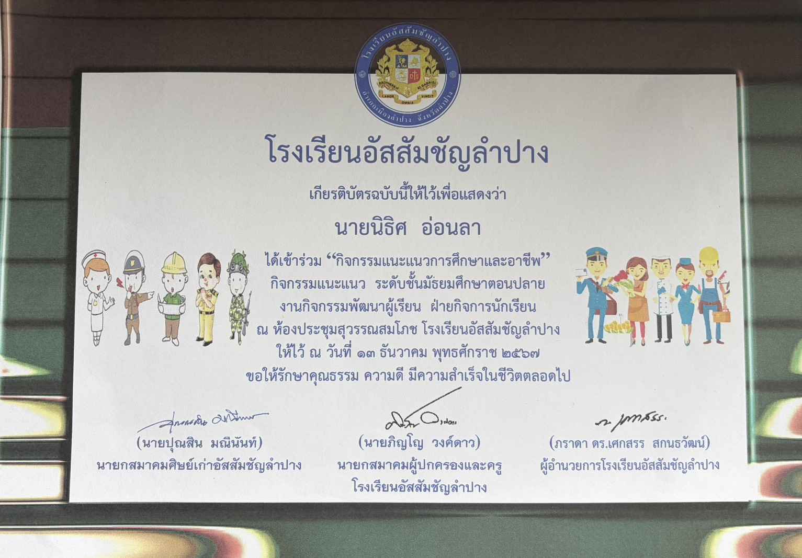
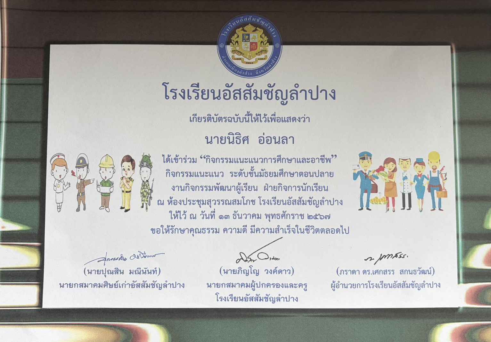

นิธิศ อ่อนลา
(สมัครศึกษา) สาขาการจัดการสมัยใหม่และเทคโนโลยีสารสนเทศมหาวิทยาลัยเชียงใหม่
แนะนำตัวเอง
สวัสดีครับผมชื่อ นายนิธิศ อ่อนลา เส้นทางการศึกษาและการตัดสินใจเลือกคณะของผม เกิดจากความสนใจในเทคโนโลยีและการสื่อสารที่เป็นส่วนสำคัญของชีวิตประจำวัน ตั้งแต่เด็กผมชอบติดตามข่าวสารเกี่ยวกับเทคโนโลยีใหม่ ๆ สนใจการทำงานของระบบคอมพิวเตอร์และสื่อดิจิทัลต่าง ๆ จนทำให้ผมอยากเข้าใจให้ลึกขึ้นว่าเทคโนโลยีเหล่านี้ถูกนำมาใช้ในการบริหารจัดการธุรกิจและองค์กรอย่างไรเส้นทางการศึกษาและการตัดสินใจเลือกคณะของผม เกิดจากความสนใจในเทคโนโลยีและการสื่อสารที่เป็นส่วนสำคัญของชีวิตประจำวัน ตั้งแต่เด็กผมชอบติดตามข่าวสารเกี่ยวกับเทคโนโลยีใหม่ ๆ สนใจการทำงานของระบบคอมพิวเตอร์และสื่อดิจิทัลต่าง ๆ จนทำให้ผมอยากเข้าใจให้ลึกขึ้นว่าเทคโนโลยีเหล่านี้ถูกนำมาใช้ในการบริหารจัดการธุรกิจและองค์กรอย่างไรนั้นเป็นเหตุผลที่ผมสนใจจะเข้าคณะการจัดการสมัยใหม่ และเทคโนโลยีและการสื่อสาร
การศึกษา
มัธยมศึกษาปีที่ 4 - มัธยมศึกษาปีที่ 6
ศึกษาที่โรงเรียนอัสสัมชัญลำปาง
มัธยมศึกษาปีที่ 1 - มัธยมศึกษาปีที่ 3
ศึกษาที่โรงเรียนบุญวาทย์วิทยาลัย
ความรู้
- มีความรู้ด้านการเขียนโค้ด HTML และ CSS ได้รับความรู้มาจากเว็บไซต์ W3Schools และจากพี่ที่มีประสบการณ์ในด้านนี้
ทักษะ
- มีทักษะในเชิงวิเคราห์ความคิดได้ดีและมีทักษะในการเขียนโค้ด HTML และ CSS เป็นพิเศษ
- สามารถประกอบคอมได้มีความรู้เกี่ยวกับชิ้นส่วนของคอม
ช่องทางการติดต่อ
เบอร์โทรศัพท์ : 0856187992
อีเมล : amaraonla@gmail.com
กิจกรรม
เข้าร่วมกิจกรรม Open House วิศวกรรมมหาวิทยาลัยเชียงใหม่
เป็นกิจกรรมที่ผมเริ่มเข้าใจเรื่องการเขียนโค้ดต่างๆมากขึ้นเนื่องจากผมได้เข้าไปดูคณะวิศวกรรมคอมพิวเตอร์ทำให้ผมรู้ว่าคอมพิวเตอร์สามารถทำอะไรได้บ้าง
ร่วมกิจกรรม ACL CARE
เป็นกิจกรรมของโรงเรียนที่เปิดให้นักเรียนได้ร่วมกันสร้างสิ่งประดิษฐ์สำหรับตัวผมกิจกรรมนี้ทำให้ผมเริ่มมีความสามารถในด้านการเขียนโปรแกรมของหุ่นยนต์และความสามัคคีในการทำงาน
เกียรติบัตร
ฝึกงานที่โรงพยาบาลสัตว์เล็ก มหาวิทยาลัยเชียงใหม่
X-RAY ON TOUR


กิจกรรมพัฒนาตัวเอง


กิจกรรมในโรงเรียน
 

TCAS EXPO
ACL CARE
กิจกรรมนักศึกษาทหาร